Integral Approximations
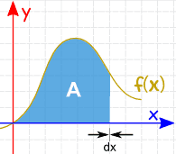
Integration is the best way to find the area from a curve to the axis, because we get a formula for an exact answer.
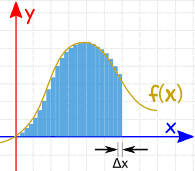
But when integration is hard (or impossible) we can instead add up lots of slices to get an approximate answer.
Let's have a go!
Examples
Let's use f(x) = ln(x) from x = 1 to x = 4
We actually can integrate that (this let's us check answers) and get the true answer of 2.54517744447956....
But imagine we can't, and all we can do is calculate values of ln(x):
- at x=1: ln(1) = 0
- at x=2: ln(2) = 0.693147...
- etc
We will use a slice width of 1 to make it easy to see what is going on, but smaller slices are more accurate.
There are different methods we can use:
Left Rectangular Approximation Method (LRAM)
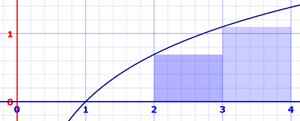
This method uses rectangles whose height is the left-most value. Areas are:
- x=1 to 2: ln(1) × 1 = 0 × 1 = 0
- x=2 to 3: ln(2) × 1 = 0.693147... × 1 = 0.693147...
- x=3 to 4: ln(3) × 1 = 1.098612... × 1 = 1.098612...
Adding these up gets 1.791759, much lower than 2.545177. Why?
Because we are missing all that area between the tops of the rectangles and the curve.
This is made worse by a curve that is constantly increasing. When a curve goes up and down more, the error is usually less.
Right Rectangular Approximation Method (RRAM)
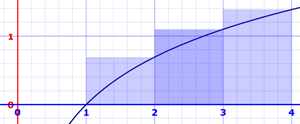
Here we calculate the rectangle's height using the right-most value. Areas are:
- x=1 to 2: ln(2) × 1 = 0.693147... × 1 = 0.693147...
- x=2 to 3: ln(3) × 1 = 1.098612... × 1 = 1.098612...
- x=3 to 4: ln(4) × 1 = 1.386294... × 1 = 1.386294...
Adding these up gets 3.178054, which is now much higher than 2.545177, because of the extra areas between the tops of the rectangles and the curve.
Midpoint Rectangular Approximation Method (MRAM)
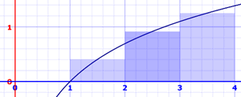
We can also use the midpoint! Areas are:
- x=1 to 2: ln(1.5) × 1 = 0.405465... × 1 = 0.405465...
- x=2 to 3: ln(2.5) × 1 = 0.916291... × 1 = 0.916291...
- x=3 to 4: ln(3.5) × 1 = 1.252763... × 1 = 1.252763...
Adding these up gets 2.574519..., which is quite close to 2.545177.
Trapezoidal Rule

We can have a sloped top! Each slice is now a trapezoid (or possibly a triangle), so it is called the Trapezoidal Rule.
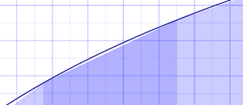
The calculation just averages the left and right values. Areas are:
- x=1 to 2: ln(1) + ln(2) 2 × 1 = 0 + 0.693147...2 × 1 = 0.346573...
- x=2 to 3: ln(2) + ln(3)2 × 1 = 0.693147... + 1.098612...2 × 1 = 0.895879...
- x=3 to 4: ln(3) + ln(4)2 × 1 = 1.098612... + 1.386294...2 × 1 = 1.242453...
Adding these up gets 2.484907, which is still a bit lower than 2.545177, mostly because the curve is concave down over the interval.
Notice that in practice each value gets used twice (except first and last) and then the whole sum is divided by 2:
ln(1) + ln(2) 2 × 1 + ln(2) + ln(3) 2 × 1 + ln(3) + ln(4) 2 × 1
1 2 × ( ln(1) + ln(2) + ln(2) + ln(3) + ln(3) + ln(4) )
1 2 × ( ln(1) + 2 ln(2) + 2 ln(3) + ln(4) )
So we can have a general formula:
Δx 2 × ( f(x0) + 2f(x1) + 2f(x2) + ... 2f(xn−1) + f(xn) )
By the way, this method is just the average of the Left and Right Methods:
Trapezoidal Approximation = LRAM + RRAM 2
Note: the previous 4 methods are also called Riemann Sums after the mathematician Bernhard Riemann.
Simpson's Rule
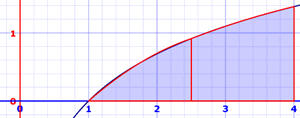
An improvement on the Trapezoidal Rule is Simpson's Rule. It is based on using parabolas at the top instead of straight lines. The parabolas often get quite close to the real curve:
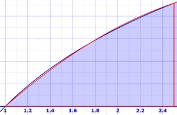
It sounds hard, but we end up with a formula like the trapezoid formula, but we divide by 3 and use a 1, 4, 2, ..., 2, 4, 1 pattern of factors:
Δx 3 × ( f(x0) + 4f(x1) + 2f(x2) + ... 4f(xn−1) + f(xn) )
But: n must be even. So let's take 6 slices of 0.5 each:
0.5 3 × ( f(1) + 4f(1.5) + 2f(2) + 4f(2.5) + 2f(3) + 4f(3.5) + f(4) )
Plugging in values of ln(1) etc gives:
0.5 3 × ( 15.2679... )
2.544648...
This is a great result when compared to 2.545177....
Plus and Minus
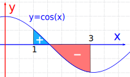
When the curve is below the axis the value of the integral is negative!
So we get a "net" value.
Error and Accuracy
Let's compare them all:
| f(x)=ln(x) | N = 3 | N = 6 | N = 100 | |||||
| Estimation | Error | Estimation | Error | Estimation | Error | |||
| LRAM | 1.791759 | 0.753418 | 2.183140 | 0.362037 | 2.524327 | 0.020850 | ||
| RRAM | 3.178054 | -0.632877 | 2.876287 | -0.331110 | 2.565916 | -0.020739 | ||
| MRAM | 2.574519 | -0.029342 | 2.552851 | -0.007674 | 2.545206 | -0.000029 | ||
| Trapezoidal Rule | 2.484907 | 0.060271 | 2.529713 | 0.015464 | 2.545121 | 0.000055 | ||
| Simpson’s Rule | (N must be even) | 2.544648 | 0.000529 | 2.545177 | <0.000001 | |||
Simpson’s Rule rules! And it is just as easy to use as the others.
Of course a different function will produce different results. Why not try some yourself?
Maximum Error
Often we won't know the actual answer ... so how do we know how good our estimate is?
You can get a good feel by trying different slice widths.
And there are also these formulas for the maximum error of approximation (these are for the worst case and the actual error will hopefully be a lot smaller):
For Midpoint: |E| = K(b-a)3 24n2
For Trapezoidal: |E| = K(b-a)3 12n2
For Simpson's: |E| = M(b-a)5 180n4
Where:
- |E| is the absolute value of the maximum error (could be plus or minus)
- a is the start of the interval
- b is the end of the interval
- n is the number of slices
- K is the greatest second derivative over the interval.
- M is the greatest fourth derivative over the interval.
(By "greatest" we mean the maximum absolute value.)
a, b and n are easy, but how do we find K and M ?
Example: f(x) = ln(x) between 1 and 4
Let's find some derivatives first, we will need them:
- 1st derivative: f'(x) = 1/x
- 2nd derivative: f''(x) = −1/x2
- 3rd derivative: f(3)(x) = 2/x3
- 4th derivative: f(4)(x) = −6/x4
- 5th derivative: f(5)(x) = 24/x5
The greatest K could be at the start, end, or somewhere in between:
- Start: f''(1) = −1/12 = −1
- End: f''(4) = −1/42 = −1/16
- In between: use the 3rd derivative to see if there are zeros in the 1 to 4 interval, which could mean a change in direction.
Does f(3)(x) = 0 between 1 and 4? No. So the maximum is at start or end.
So K = 1 (the maximum absolute value)
Same for M, but higher derivatives:
- Start: f(4)(1) = −6/14 = −6
- End: f(4)(4) = −6/44= −6/256
- In between: use the 5th derivative to see if there are zeros in the 1 to 4 interval.
Does f(5)(x) = 24/x5 equal zero between 1 and 4? No.
So M = 6 (the maximum absolute value)
For just 6 slices, the Maximum Errors are:
Midpoint: |E| = 1(4−1)3 24×62 = 0.03125
Trapezoidal: |E| = 1(4−1)3 12×62 = 0.0625
Simpson's: |E| = 6(4−1)5 180×64 = 0.00625
Shapes we Know
The curve may have a shape we know, and we can use geometry formulas like these examples:
Example: Triangle
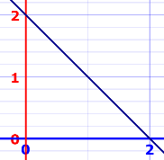
f(x) = 2 − x, from 0 to 2
A = ½ × 2 × 2 = 2
Example: Rectangle
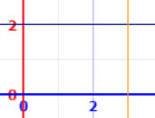
f(x) = 2, from 0 to 3
A = 2 × 3 = 6
Example: Semicircle
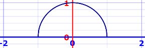
f(x) = √(1 − x2), from −1 to +1
A = π r2 / 2 = π / 2
Conclusion
We can estimate the area under a curve by slicing a function up
- Left Rectangular Approximation Method (LRAM)
- Right Rectangular Approximation Method (RRAM)
- Midpoint Rectangular Approximation Method (MRAM)
- Trapezoidal Rule
- Simpson's Rule